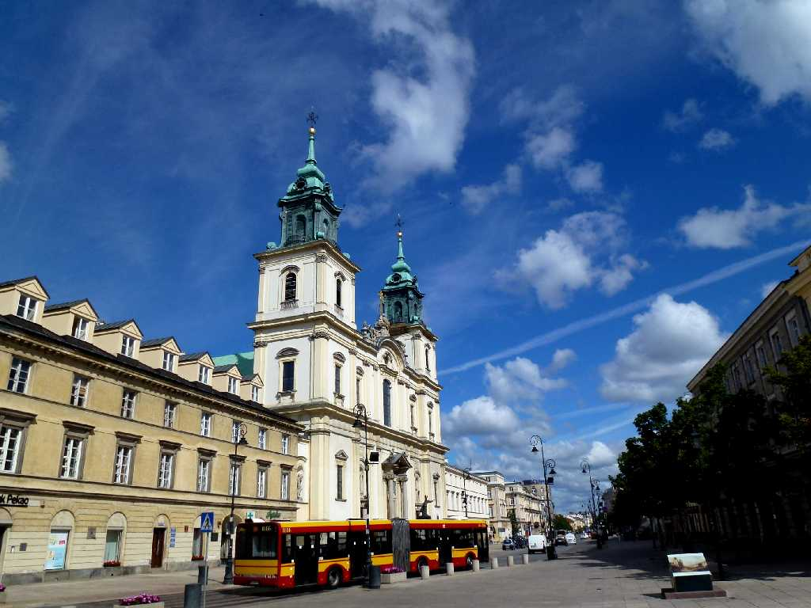
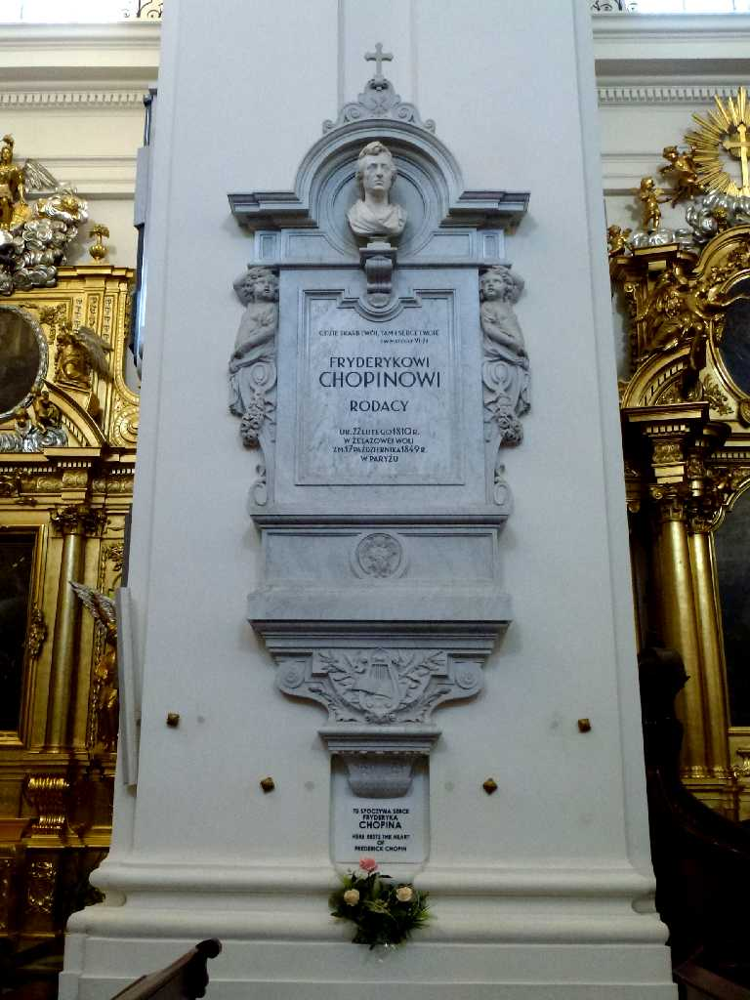
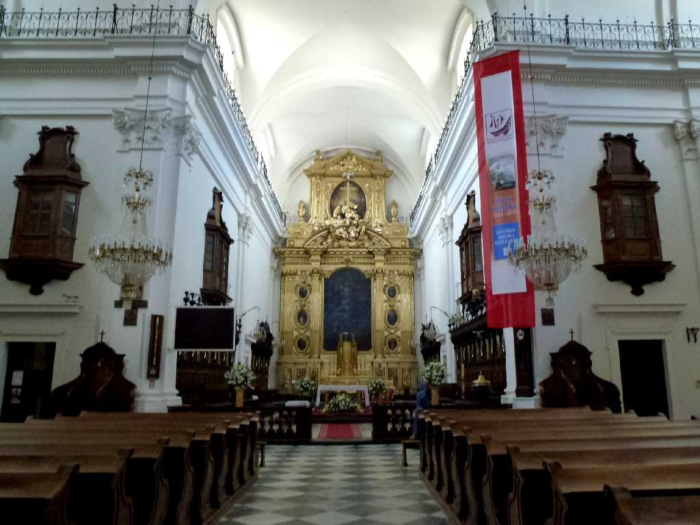
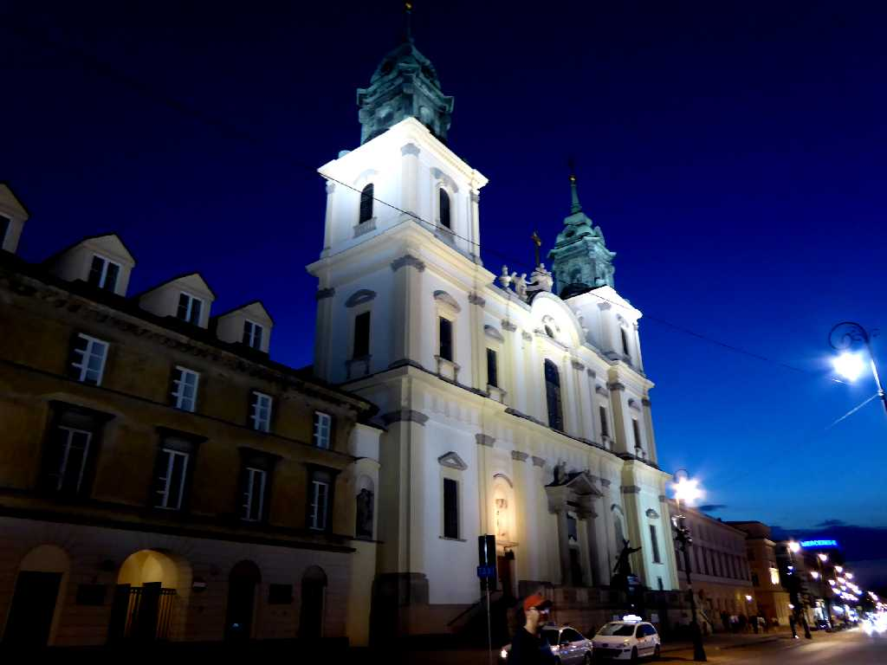

Bazylika Świętego Krzyża Warsaw
８０日間世界一周鉄道の旅２８日目聖十字架教会の日曜ミサに参列したがミサで総司教の閲兵式が行われた

Epitafium z sercem Chopina Bazylika Świętego Krzyża
ショパンの心臓が納められている墓碑

Altar Bazylika Świętego Krzyża

Evening View Bazylika Świętego Krzyża
ポーランド周遊３,５００㎞バスの旅で６年ぷりのワルシャワ再訪問